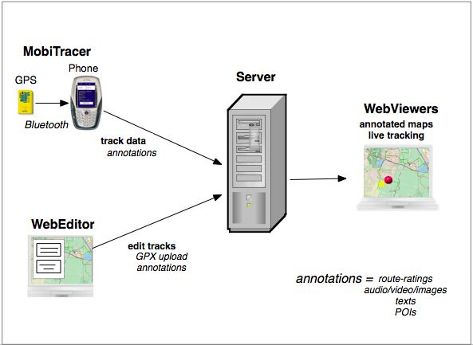

[TraceLand] [MobiTracer] [Presentation] [Documentation]
During July 20-23, 2006 Waag Society will be reporting live from the Futuresonic Festival in Manchester UK using GeoTracing.
<< Follow the tracing-reporters Ronald and Aske live from Futuresonic >>
About
GeoTracing is a software platform for creating multimedial geo-applications. These applications have in common that they allow you to tell your multimedial story about your movement through the landscape, whether on foot, skates, by bike or other means. View for example the TraceLand application. You can there sign up and download the MobiTracer mobile client.
Applications
The following applications have been or are being developed with GeoTracing.
TraceLand - the GeoTracing testbed application
GeoSkating - create media-annotated skate-maps
Sense of the City - civilians trace Eindhoven
Bliin - navigating experiences (in progress)
GeoSailing - create media-annotated sailing-tracks
GeoBiking - create media-annotated bicycle tracks
N8Spel - a multimedial geodrawing game
OtterTracing - Field-observation of otters in The Netherlands
Mobile Learning Game Kit (MLGK) - (in progress)
Concept

The main concept is depicted above. The MobiTracer is a personalized Java (J2ME) application running on a mobile phone. MobiTracer reads GPS location data from a Bluetooth GPS module and sends it to a server. Within a browser the routes followed by MobiTracers can be viewed. Each MobiTracer can also be followed in real-time moving over the map. In addition the MobiTracer can send track-annotations in the form of media (images/video/audio/text) ratings (e.g. road-conditions) and Points of Interest (POIs) to the server. Media and annotations are shown at their geographic locations on the map. The server stores all data in a Content Management System (CMS) such that it is available to a wealth of applications like map-creation, geodrawing, playing back routes, geo/mobile-gaming etc.
Through the WebEditor personal tracks can also be managed. For example, you may have a handheld GPS (say a Garmin) that logs tracks for you. You may export those tracks to GPX and upload them to the server. Be sure to add timestamping info. In addition you may submit e.g photo's taken with a digital camera. Through the photo's timestamp these get geo-tagged to their locations (or you may point-and-click). Tracks created through the MobiTracer may be edited and annotated.
The server stores tracks in a Content Management System no matter how they were created.
Features
- create GPS tracklogs remotely from mobile phone
- create GPS tracklogs remotely by (GPX) upload
- submit and relate media (audio/video/images) to points in GPS tracklogs
- submit and relate Points of Interests (POIs) to points in tracklogs
- annotate tracklogs with route parameters (e.g asphalt rating, sceneray rating)
- create overlayed maps by combining tracklogs
- live/real-time tracing in browser
- view and play back tracks in browser
- Location Based Services (LBS) through trigger on geotagged objects (e.g. POIs)
- portal functions: personal tracklogs and media
- extensibility: server-side plug-ins
- open/XML-based protocols: create clients in any technology
Technologies
KeyWorx is the underlying technology for GeoTracing. KeyWorx is developed by Waag Society. Other technologies used are Pushlets (for real-time browser events), AJAX and Google Maps.
Development
GeoTracing is in the process of going Open Source. Thanks to the folks at CodeHaus we have a space at geotracing.codehaus.org
Documentation
Documentation is maintained in the GeoTracing Wiki. This will in the coming time moved to geotracing.codehaus.org.
Interested ?
There is a mailing list at groups.yahoo.com/group/geotracing for first users, developers and other interested parties you may want to join.
Contact
Just van den Broecke - just AT justobjects.nl